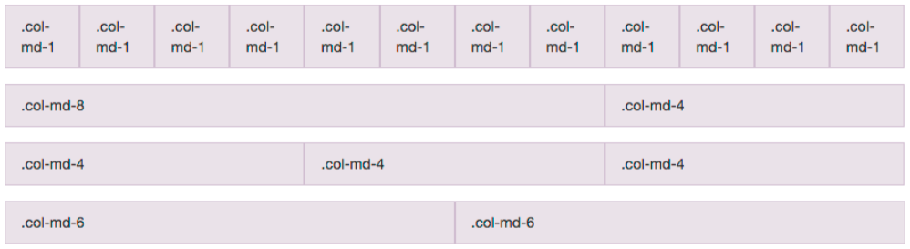

Intro to CSS and HTML
What we'll cover
Tools that allow us to code quicker and easier
What is HTML?
Is everyone familiar with HTML?
HTML is Structure
<html>
<head>
My Web Site!
</head>
<body>
Hello World
Welcome to my web page!
</body>
</html>
Tags help structure
- nav
- header
- section
- aside
- p
- div
- table thead th tbody tr td
- ul li, ol li
- img
- hr
- ... and many more
Tags can have attributes

Tags can have a Class and/or an Id
What is CSS?
Is everyone familiar with CSS?CSS is Style
Cascading style sheets (CSS) are a way to add style to your web page.Syntax
selector {
property : value;
}
Style a <P> tag
p {
color : #333333; /* also known as gray20 */
font-size : 12px;
}
Styling a Tag
Styling a tag can be a good way to cover a lot of your site, but it will limit the amount of detail you can apply to the site.
Make a class instead
Classes allow you to reuse the styling on multiple elements.
.call-to-action {
background-color : #ff0000; /* red */
color : #ffffff; /* white */
font-weight : bold;
font-size : 14px;
}
And then in the html
This is attention getting!
This might be a bit harsh on the eyes if overused.
Class Example
JS Bin on jsbin.comID's are an option
But usually not a good idea
- IDs start with a #
- You can only use them once per page
#call-to-action {
color : #ff00ff;
font-size : 20px;
}
Then in the HTML
This will be fuchsia, but we can only use the ID once
ID Example
JS Bin on jsbin.comOther CSS Selectors
X Y - Descendant
X > Y - Direct Descendant
X:hover - Pseudo Class
X + Y - Adjacent
X ~ Y - Sibling
X Y - Descendant
p {
color : red;
}
a {
color : green;
}
p a {
color : blue;
}
A link by itself
This is a paragraph and this link will be blue
this is bold text and another blue link
Descendant Example
JS Bin on jsbin.comX > Y - Direct Descendant
p > a {
color : blue;
}
a {
color : green;
}
This is a paragraph and this link will be blue,
this is bold text and a gree link
Direct Descendant Example
JS Bin on jsbin.comX:hover - Pseudo Class
a {
color : blue;
}
a:hover {
color : red;
}
This will turn red when the user hovers over it
Pseudo Class Example
JS Bin on jsbin.comX + Y - Adjacent
ul {
color : red;
}
ul + p {
color : blue;
}
I'll be the default color
- I will be red
I will be blue
I'll be the default color
Adjacent Example
JS Bin on jsbin.comX ~ Y - Sibling
ul {
color : red;
}
ul ~ p {
color : blue;
}
I'll be the default color
- I will be red
I will be blue
Some text
I will be blue too
Sibling Example
JS Bin on jsbin.comSpecificity
These selectors have the same specificity, so they are applied in the order they are listed, so all p tags will be blue
p { color : red; }
p { color : blue; }
Specificity...
While the blue rule comes last, the first rule is more specific, so both rules will be applied appropriately
div p { color : red; }
p { color : blue; }
Specificity ̄\_(ツ)_/ ̄
Specificity can get complicated, and that complication is not really in the scope of this presentation
Additional CSS Links
What is Bootstrap?
Who has heard of Bootstrap?
Bootstrap is...
Bootstrap is an HMTL, CSS, and Javascript framework for developing websites quickly and easily.
Out of the box, bootstrap gives you:
- Mobile Ready Design
- Responsive Pages
- Grid System
- Typography
- Glyphicons
- Components
Pros and Cons
The pros of Bootstrap is that it has done a lot of the heavy lifting for you, and can get you up and running relatively quickly.
This leads into the main con of bootstrap, which is that a lot of bootstrap themed sites can look the same if you don't apply the proper level of design polish to them.
Grid System

Typography
Glyphicons
Components
- Navbar
- Buttons and button groups
- Breadcrumbs
- Pagination
- Alert Areas
- Panels
- Modal popups
Examples
In Summary
Bootstrap helps you write a good looking web site fairly easily and quickly.
By using well documented HTML formatting and well defined CSS classes, it allws others to be able to understand and assist with coding.
Editors
This is obviously a personal decision and each developer could be producing great code using entirely different editors.
A short list
- Atom
- Dreamweaver
- Emacs/VI/Vim
- Microsoft Code
- Netbeans
- Sublime Text
- Webstorm/PHPStorm
Features
- Lightweight
- Plugin architecture and ecosystem
- Multi-carat editing
- Code completion
- ... more about this stuff in the Tools section
What is SASS?
Who has heard of SASS, Compass, or LESS?
SASS is CSS (and more)
SASS is an extension of CSS3 which adds nested rules, variables, mixins, selector inheritance, and more. SASS generates well formatted CSS and makes your stylesheets easier to organize and maintain.
How is SCSS like CSS?
CSS
.call-to-action {
background-color : red;
color : white;
font-weight : bold;
}
SCSS
.call-to-action {
background-color : red;
color : white;
font-weight : bold;
}
Advantages
- Variables
- Nesting
- Mixins
- Functions
- Compiling
Advantages - Variables
SCSS
$alert-color : #ffffff;
$alert-background-color : #ff0000;
$font-size : 13px;
.call-to-action {
background-color : $alert-background-color;
color : $alert-color;
font-size : $font-size;
}
Advantages - Variables
Converts to CSS
.call-to-action {
background-color : #ff0000;
color : #ffffff;
font-size : 13px;
}
Advantages - Nesting
In CSS, you have to explictly write out each selector, even if they share the same base tag.
nav ul {
margin : 0;
list-style : none;
}
nav ul li {
display : inline-block;
}
nav a {
display : block;
padding : 6px 12px;
text-decoration : none;
}
Advantages - Nesting
In SASS you can nest your CSS selectors.
nav {
ul {
margin : 0;
list-style : none;
li {
display : inline-block;
}
}
a {
display : block;
padding : 6px 12px;
text-decoration : none;
}
}
Advantages - Mixins
Mixins are methods that you can call to help you write less code
SCSS
@mixin border-radius ($radius) {
-webkit-border-radius: $radius;
-moz-border-radius: $radius;
-ms-border-radius: $radius;
border-radius: $radius;
}
.box {
@include border-radius(10px);
}
Advantages - Mixins
Compiles to CSS
.box {
-webkit-border-radius: 10px;
-moz-border-radius: 10px;
-ms-border-radius: 10px;
border-radius: 10px;
}
Advantages - Functions
Many built in functions, but you can also write your own
p {
color : hsl(0, 100%, 50%);
}
p {
color : #ff0000;
}
Advantages - Compiling
SASS can compile to different levels of compression
- Nested
- Expanded
- Compact
- Compressed
Compass
Compass is an open-source CSS authoring framework which uses the SASS stylesheet language as a foundation to make writing stylesheets powerful and easy.
- Mixins
- Functions
- Variables
- Typography
Tools
This can go hand-in-hand with the editor you choose, or it can be additional tools you use outside of your editor to assist with your development workflow.